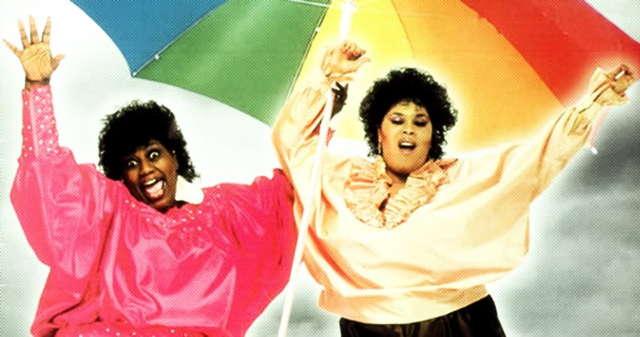

Sorties nocturnes
Les sorties entre amis sont une activité incontournable et fortement recomandée de la vie étudiante. Toulouse étant une ville étudiante vous etes au bon endroit et les festivités seront multiples.
Au programme, bars, boites de nuit et ballades nocturnes ..
Les bons bars
Petite sélection des bons coins dans lesquels passer du bon temps accompagné de vos copains et copines.
Chez Tonton
16 Place Saint-Pierre, 31000 Toulouse
Le café Populaire (pop')
9 Rue de la Colombette, 31000 Toulouse
Le bar basque
7 Place Saint-Pierre, 31000 Toulouse
Boites de nuit
Penser à remplir cette partie ..
"It's raining men ! Alleluia !"

Se ballader la nuit à Toulouse ?
Les forets des alentours de la Garonne étant peu recommandées nous vous proposons le capitole et ses lumières ..
.